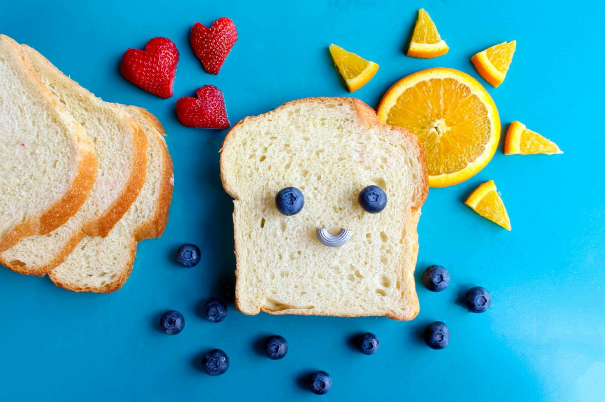

Consejos para Padres
En BabyShop nos preocupamos por acompañarte en esta maravillosa etapa de crianza con consejos prácticos y útiles.
Guía Completa de Cuidados para Recién Nacidos
Publicado el 30 de junio, 2025
El primer mes con tu bebé es un período de adaptación tanto para los padres como para el recién nacido. Estos cuidados esenciales te ayudarán a garantizar su salud y bienestar:
Alimentación y Nutrición
La lactancia materna es el alimento ideal para tu bebé. Recomendaciones clave:
- Frecuencia: 8-12 tomas al día (cada 2-3 horas)
- Posición correcta: Boca bien abierta, labios hacia fuera, mentón tocando el pecho
- Señales de hambre: Movimientos de búsqueda, chupeteo de manos, inquietud
- Suplementos: Vitamina D desde los primeros días (400 UI diarias)
Sueño Seguro
Para reducir el riesgo de SMSL (Síndrome de Muerte Súbita del Lactante):
- Posición boca arriba siempre para dormir
- Superficie firme sin almohadas, peluches o protectores
- Temperatura ambiente entre 20-22°C
- Compartir habitación sin compartir cama (hasta los 6 meses mínimo)
Consejo profesional: Establece rutinas desde el principio (baño-masaje-alimentación-sueño) para ayudar a regular los ciclos circadianos del bebé.
Cuidado del Cordón Umbilical
Hasta que se caiga (entre 5-15 días):
- Limpia con alcohol isopropílico 70% en cada cambio de pañal
- Dobla el pañal por debajo para permitir la circulación de aire
- Baños solo con esponja hasta que se desprenda
- Observa signos de infección: enrojecimiento, mal olor, secreción amarillenta
Higiene y Baño
Después de la caída del cordón:
| Elemento |
Recomendación |
| Frecuencia |
2-3 veces por semana (baños diarios pueden resecar la piel) |
| Temperatura agua |
37°C (usar termómetro o probar con el codo) |
| Duración |
5-10 minutos máximo |
| Productos |
Jabón neutro sin perfume, champú sin lágrimas |
Llanto y Consuelo
Estrategias para calmar a tu bebé:
Método 5S del Dr. Karp
- Swaddling (envolver)
- Side/Stomach position (posición de costado/boca abajo solo cuando esté despierto)
- Shushing (sonido "shhh" fuerte)
- Swinging (balanceo suave)
- Sucking (succión - chupete o dedo limpio)
Contacto piel con piel
- Regula temperatura y frecuencia cardíaca
- Estimula la lactancia
- Reduce el estrés del bebé
- Favorece el vínculo afectivo
Control Médico
Visitas pediátricas esenciales:
- Primera semana: Evaluación de ictericia, peso y alimentación
- 1 mes: Crecimiento, desarrollo y vacunas (Hepatitis B)
- 2 meses:Primeras vacunas combinadas
Alimentación Complementaria: Guía Definitiva
Publicado el 2 de Abril, 2023

La introducción de alimentos sólidos es un hito fundamental en el desarrollo de tu bebé. Esta guía detallada te acompañará en el proceso:
Señales de Preparación
Tu bebé está listo cuando:
- Mantiene la cabeza erguida sin ayuda
- Se sienta con apoyo (en silla alta o regazo)
- Ha perdido el reflejo de extrusión (no empuja la comida con la lengua)
- Muestra interés activo por la comida (intenta agarrarla, abre la boca)
- Coordina ojos-manos-boca para llevarse objetos a la boca
Cronograma de Introducción
| Edad |
Textura |
Frecuencia |
Ejemplos |
| 6-7 meses |
Purés muy lisos |
1-2 veces al día |
Zanahoria, calabaza, manzana, pera, arroz |
| 7-8 meses |
Purés con grumos |
2-3 veces al día |
Brócoli, pollo, lentejas, quinoa, aguacate |
| 9-12 meses |
Trozos blandos |
3 comidas + 1-2 snacks |
Pasta, pescado blanco, huevo, fruta madura |
Nota importante: La leche materna o fórmula sigue siendo la principal fuente de nutrición hasta el año. Los sólidos son complementarios.
BLW (Baby-Led Weaning)
Método alternativo donde el bebé se alimenta por sí mismo:
Ventajas
- Desarrolla habilidades motoras finas
- Permite autorregular la ingesta
- Familiariza con texturas reales
- Promueve hábitos alimenticios saludables
Precauciones
- El bebé debe sentarse erguido sin apoyo
- Evitar alimentos duros y pequeños
- Aprender maniobra de Heimlich
- Supervisión constante
Alimentos Prioritarios
Enfócate en estos nutrientes clave:
- Hierro: Carnes rojas, lentejas, espinacas (combinar con vitamina C para mejor absorción)
- Zinc: Pollo, garbanzos, yogur entero
- Grasas saludables: Aguacate, salmón, aceite de oliva
- Vitamina D: Pescados grasos, yema de huevo
Alimentos a Evitar
Por seguridad
- Miel (riesgo de botulismo)
- Frutos secos enteros
- Uvas enteras
- Palomitas de maíz
Por nutrición
- Sal añadida
- Azúcares refinados
- Jugos industriales
- Alimentos ultraprocesados
Solución de Problemas Comunes
¿Qué hacer cuando...
- Rechaza alimentos: Ofrecer 10-15 veces antes de descartar, presentar de formas diferentes
- Arcadas frecuentes: Normal al inicio, verificar tamaño/textura apropiada
- Estreñimiento: Aumentar agua, ciruela pasa, pera, actividad física
- Alergias sospechosas: Suspender alimento y consultar al pediatra